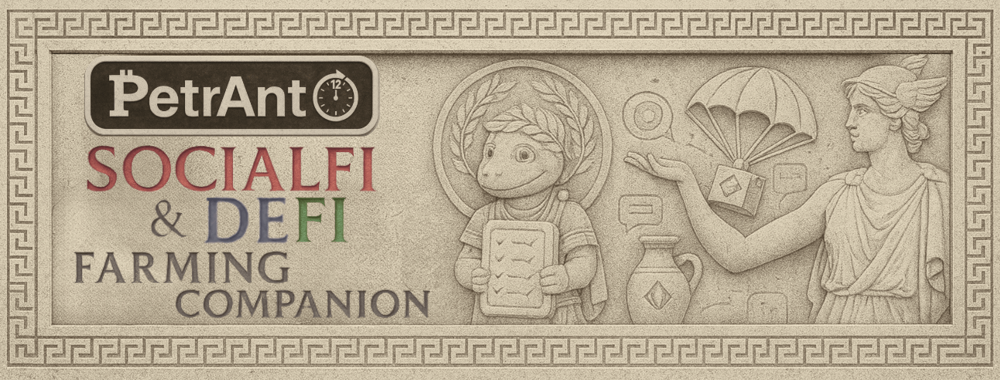

Airdrop Farming Tracker
Mode sombre • Auto-tick sur clic de lien • Confirmation manuelle du farm • Données locales
Reset today
Reset all
Export
Import
No click and no farm
Click but no farm confirmed
Click and farm OK
Notes :
“Click” se coche automatiquement lorsque vous ouvrez le lien. “Farm” est manuel. Les résumés semaine/mois/trimestre sont dérivés des enregistrements journaliers sauvegardés dans votre navigateur.
Done